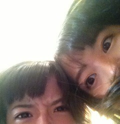

| 2013/03 03 Sun | 375回目*marika |
こんばんは。
今日はひな祭りだよー
女の子の日です
お昼にちらし寿司と
桜餅といちご大福食べた。
いちご大福さまさまさま！
毛糸や布で三つ編みするだけで
かわいくみえる

レースとかビーズとか
スパンコールとか...
ものづくり楽しい。
＼ぐわっ／

だーれだ

今から大量質問回答～
**********
 好きな男の子の服装はー？
好きな男の子の服装はー？
 私自身、シャツが好きだから
私自身、シャツが好きだから
着てたらいいなって思います。
シャツにゆるいのとか良いですね。
あと、靴下がかわいかったり！
好きなお菓子教えてください
今和菓子めっちゃすき♪
あと干し梅のお菓子とか
昔からずっとすきです。
まりかが思う乃木坂のメンバーで
１番マイペースなのは？
とまと！
あえてまいまいと言わない

まいまいはマイペースなのかな。
天然ふわーんて感じ笑
全握とか個握、何回か行っても
大丈夫？困ったりしない？
なんで困るんだ！
嬉しいに決まってるじゃないか

アジカンのライブいったことある？
実はライブとか行ったことないの。
はあー行きたいなあ！
柔道してる人どう思いますか!?
強そう！かっこいい。
私、空手少しやったことあるよ

まあやってないに近いけどね。
実際に定期とケーキ
間違えたことある？
実際駅でケーキ片手に持ち歩く人
いるのかしら。
...え？私？...私のことなの？！

ん？ゲラって何？
しょーもないことで
大笑いしてしまう人。
そのままツボにはまって
笑い続けるひとのことだよ
私は春から高校１年生に
なるんですけど、万理華ちゃんは、
初めの自己紹介ってどんな感じで
やりましたか？覚えていなかったら、
アドバイス下さい！(^^)
わあ、思い出したら懐かしい。
あの頃の髪型、おでこあげて
ポニーテールだったんだよな...
私はさらっと言って終わった！
(クールキャラ狙って)
あの頃の第一印象を友達に聞いたら
「大人しそう」「頭良さそう」
「新体操習ってそう」でした
ふは
ふは
クールどこ
2年のときなんて
「1年から来ました」で
大コケしたからね笑
私のは参考にならないのばっかだ。
ハキハキしゃべるのが一番

私みたいにキャラ作ったら
失敗する可能性が高いので
やめた方が良いです！
...って言っても学校の自己紹介って
妙に緊張しちゃうんだよね。
長くなってごめんなさい！
年下でも呼び方は
何でもありですか？
今度の全握で行こうと思うのですが
名前は何と呼べばいいですか？
呼び方に困ったら「まりっか」
って呼んでください！
年下とか、年齢なんて関係ないよ

持っている服のなかで一番
気に入ってる服はどんな服ですか？
いっぱいあるから
一つに絞れません

寧々推しだけど握手会で
まりかに会いに行ってもいい？
嬉しい。ぜひっ
ねねの相方はこんな感じかあ
ってわかるよ
 ←
←
←
まりっかが名字で呼んでる
メンバーっているのかな？
生駒！せいたんとひなは
時々呼び捨て！
いつもお洋服どこで買ってるの？
ルミネもラフォーレも行く！
AMBIDEXの服とってもかわいい^^*
古着屋も行くよ。
お肉派よりお魚派？？
どっちもすきー
今は魚よく食べるー♪
ディズニーとか行かないのｰ?
あんまり自分から
行こうとしないな。
ねえ、誰か誘って←
普段から肩にお洋服
巻いたりするの？
あと、春服でどういうのが
欲しいとかあるのかなー？
肩にかけるアイディアはママ。
挑戦しようと思う。
今狙ってる服あるから
買いに行きたいなあ
 ふふふ
ふふふ
ふふふ
一発芸は好きですか？
日村さんのトドすき♪
FUJIWARAの原西さんの
ギャグもすき！とんち！
テスト終わって今１番
やりたいことってなに(^^)？
整体に行って雑貨屋巡りして
カフェでまったりしたい。
そしてガンガンお仕事！
個人PVに出て来た白熊の名前は
何て言うの？
しろくまりっくまっていいます。
詳細は295回目の記事に載せてるので
ぜひ見てください
**********
今日はちっちゃい頃の
写真見てました...
ちっちゃい頃の髪型って
なんでもありだな。ファンキー！

1つ目のなんともいえない顔が
多かったなあ。
2つ目めっちゃ睨んでおる！こわ
3つ目、笑ってる！貴重貴重。
赤い服いっぱい着てたな

こんなに小さい時もあったんだな。
あらためておでこ広いな。
では明日も頑張りまりか！
ま り か
コメント(243)
2013/03/03 23:30